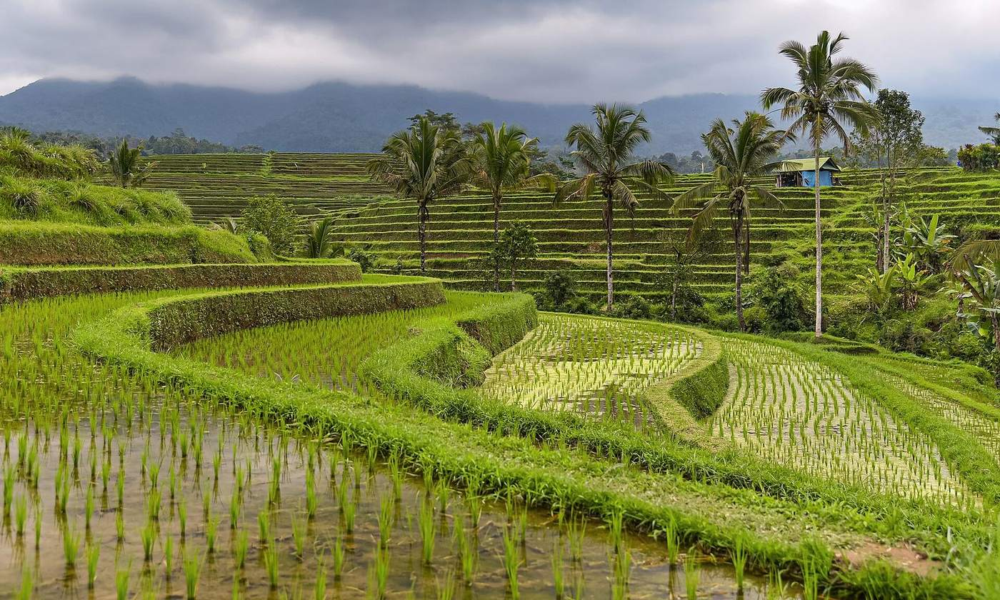
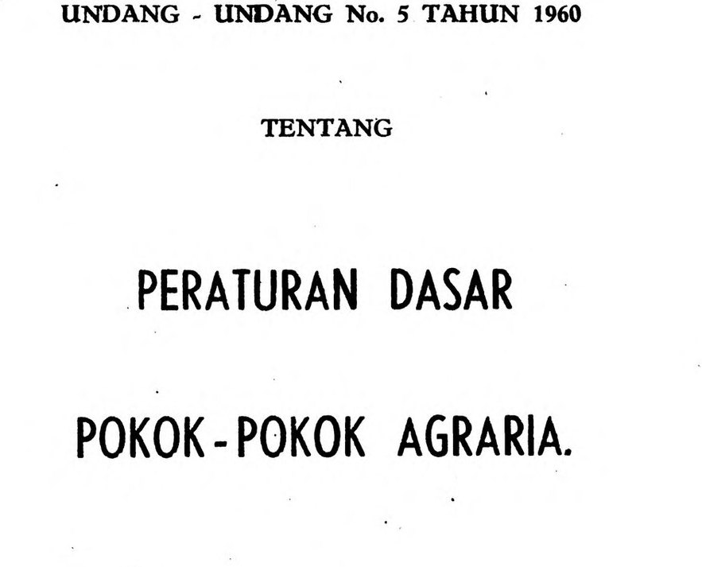

Dynamic 10 access, fortnightly updates, monthly infrastructure notes on North Bali and Lombok, priority on later land. This is the cohort, not a villa.
 KEYSTONE
KEYSTONEHow capital comes in
The villa market asks for $260k to $540k at the door. The Carrd opens three rungs under that, aimed at people who want a position in the stack.
Dynamic 10 access, fortnightly updates, monthly infrastructure notes on North Bali and Lombok, priority on later land. This is the cohort, not a villa.

Described on the Carrd as a pre-PMA bridge. Founding seed status and priority on Dynamic 10 parcels. Equity language here needs the legal memo before it is repeated.

Qualified investors. The Carrd states an equity band, a dividend policy, quarterly reporting, and a five-year buy-back. None of that ships until counsel signs it.
A February 2026 post described an AngelList SAFE at $150k and an $8m cap. That is a different instrument. Do not merge it into these three rungs without Christopher confirming which offer is open.
Wholesale path: Australian outreach is intended for sophisticated investors under s708. That confirmation is one of the three compliance asks. It is not yet in writing.